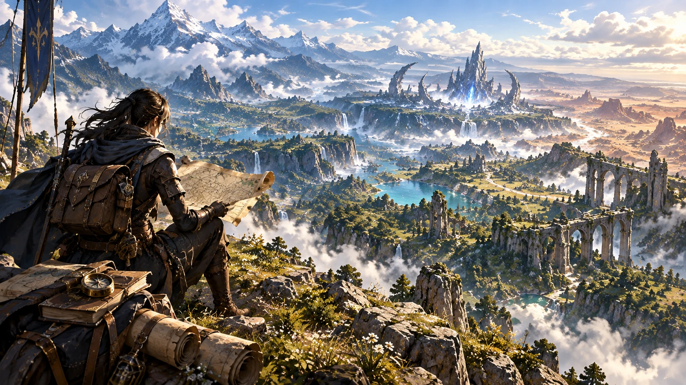

Portfolio · Narrative Design
Des mondes
qui racontent.
Des systèmes
qui les font vivre.
Worldbuilding, narration interactive et documentation de conception. Une exploration du lien entre un univers, les choix du joueur et les histoires qu’ils rendent possibles.
01 · Monde02 · Jeu03 · Conception
Reprendre votre lecture : Aetherfall

Illustration générée par IA, issue des visuels du projet.
Ma philosophie
Je conçois la narration comme un système qui dialogue avec le gameplay, les personnages et le monde.
Deux échelles.
Un même fil narratif.
Horey donne aux jeux un contexte culturel et économique. Aetherfall transforme cette intention en expérience joueur.

Choisir un angle de lecture
Comprendre le projet rapidement, puis approfondir ce qui vous intéresse.
Parcours conseillé
Commencer par Horey →
Univers d’origine → MMORPG → études de cas → méthode → documentation.